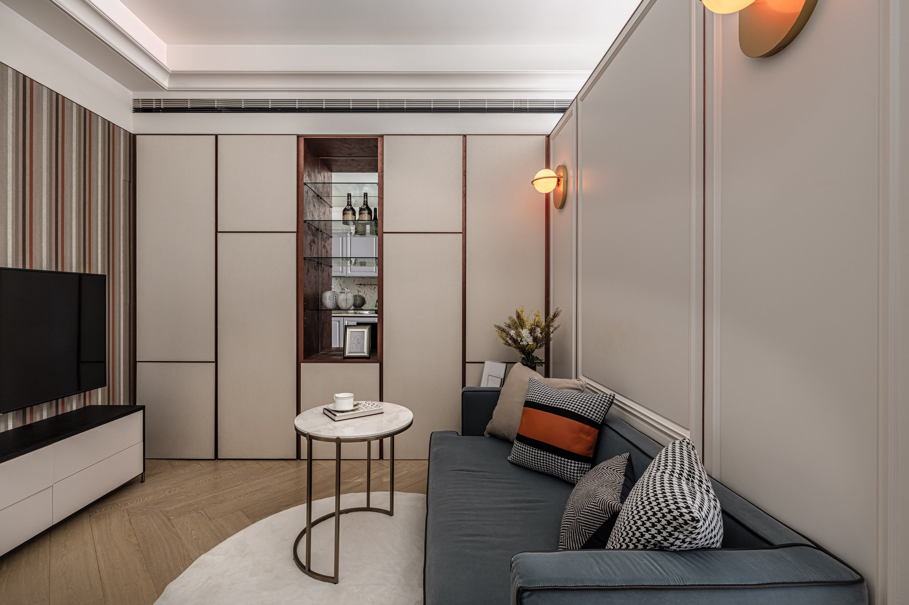
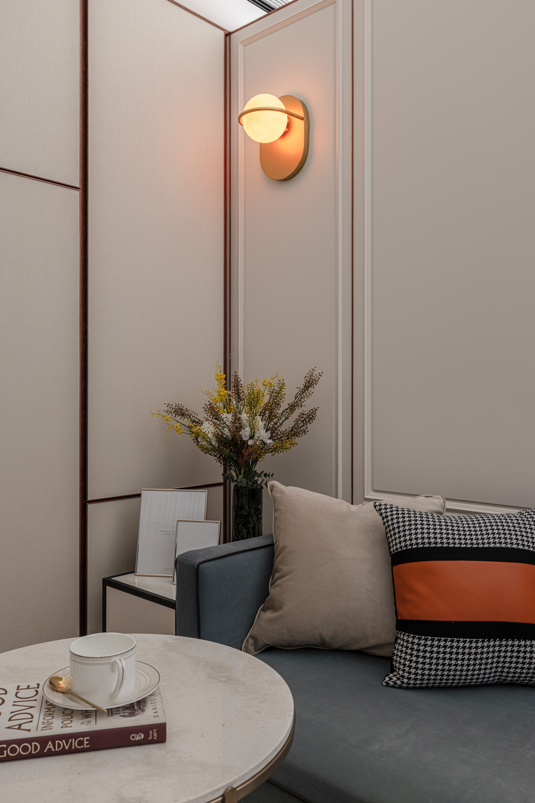
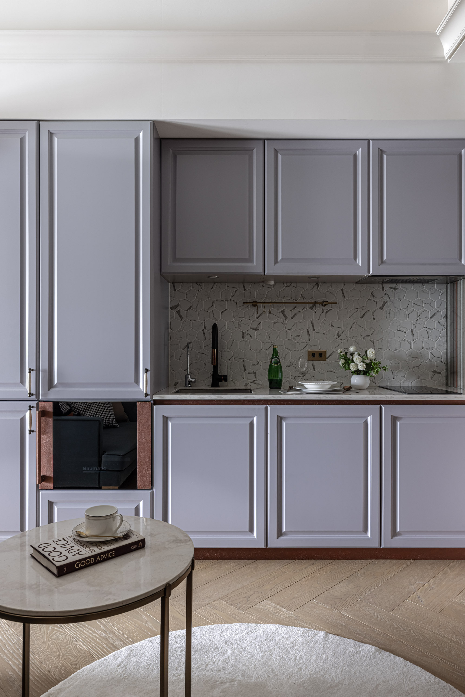
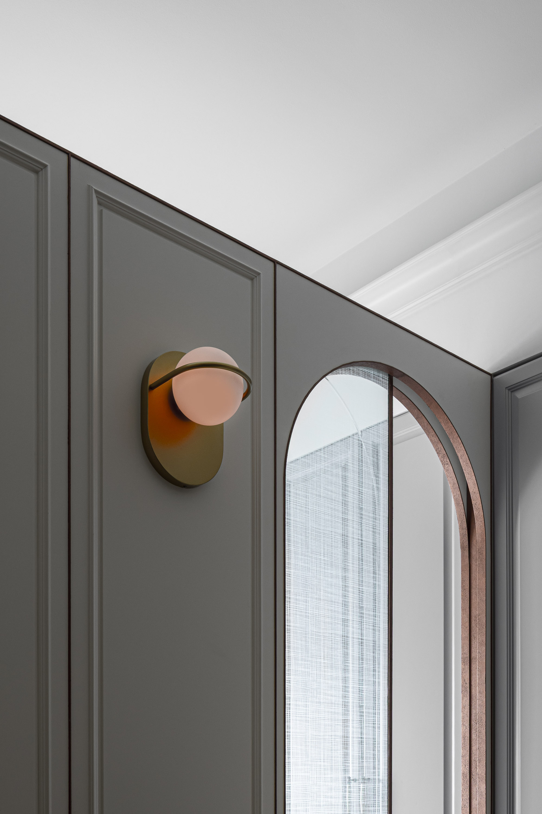
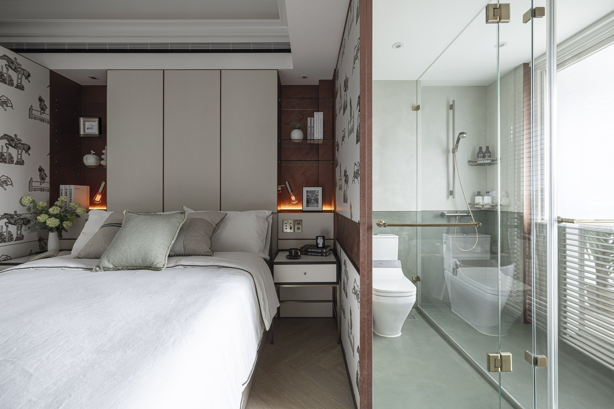
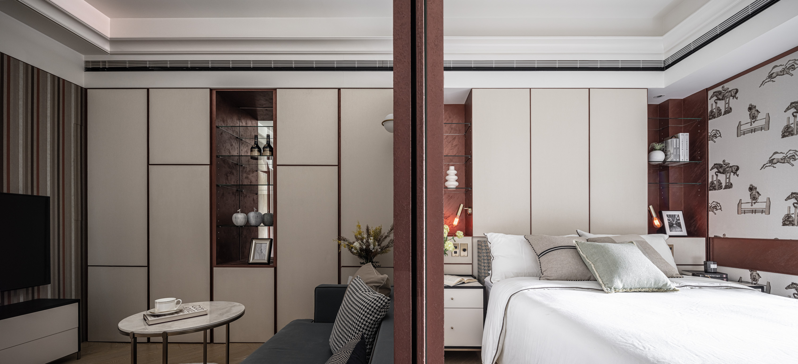
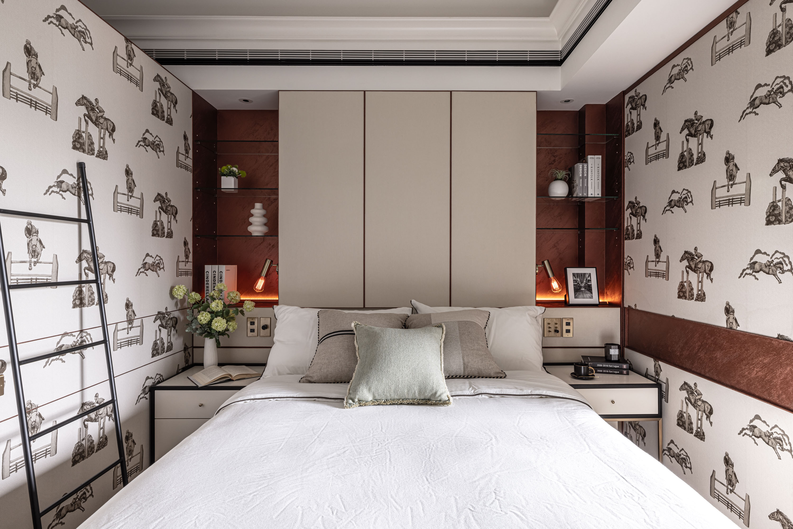
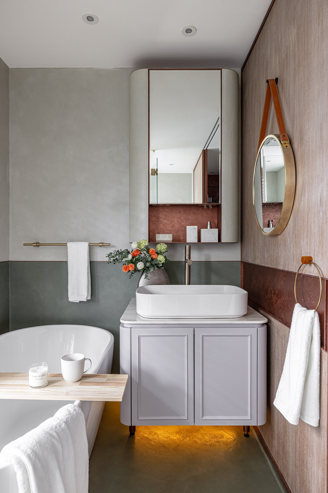
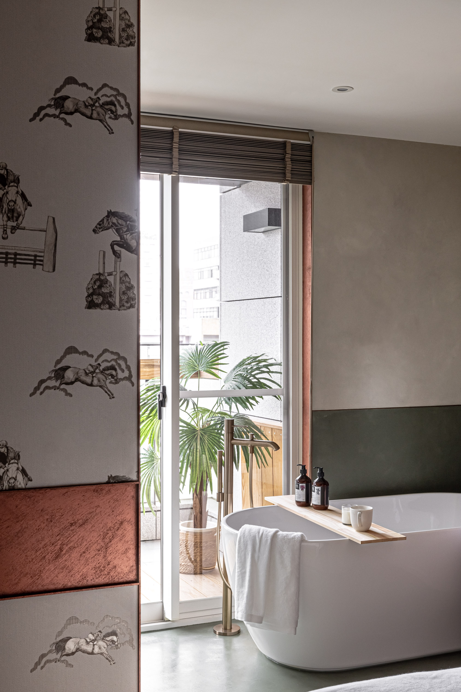
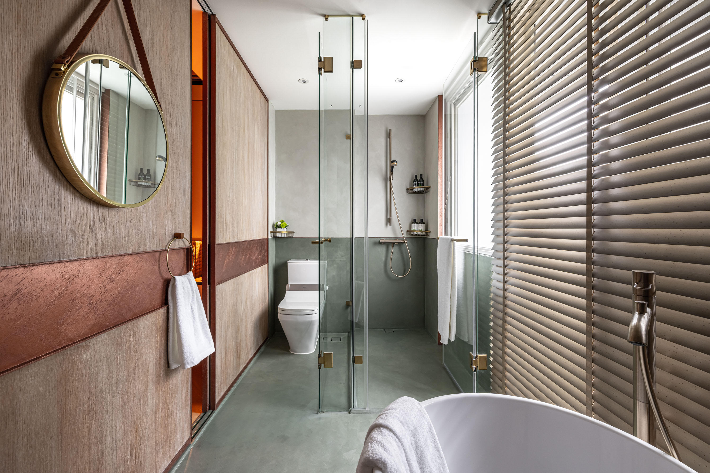

設計從看不見的地方開始。
The design begins in the invisible.



01
重新整合排煙與空調的主幹線，結構沿著兩側收整，釋放出空間的高度與節奏。系統被理順之後，光線重新獲得方向，氣流自然流動，空間因此變得純粹。
Exhaust and air conditioning trunk lines reorganized, consolidated along both sides — releasing the space's height and rhythm. Once systems were resolved, light found direction, air moved naturally, and the space became clear.


02
半高牆是這個格局最關鍵的決定。它不是在隔間與開放之間找妥協，而是同時對兩件事負責：讓光穿透，同時讓空間感知到自己的邊界。門軌藏進結構，因為看見軌道會讓人意識到空間可以被關起來——這個意識本身就是束縛。
The half-height wall is the most critical decision. It does not compromise between partition and openness — it takes responsibility for both: letting light pass while the space perceives its own boundary. The track is hidden because seeing it makes you aware the space can be closed — that awareness itself is confinement.


03
銅紅色的金屬漆不是風格選擇，是邊界的語言。在一個以霧面礦物塗料為主調的浴室裡，銅紅色作為分色的界線，告訴視線哪裡是轉折、哪裡是收束。它的功能更接近建築線腳——不是裝飾，是比例的標記。
The copper-red metallic paint is not a style choice — it is the language of boundary. In a bathroom dominated by matte mineral finish, copper-red serves as a color division, telling the eye where things turn and close. Its function is closer to architectural molding — not decoration, but a marker of proportion.


04
進口壁紙讓客廳與臥室有材質的手感和深度。紋理在光影下自己說話——白天一種閱讀，夜間另一種。這是一種安靜的豐富，不依賴視覺衝擊，而依賴材質本身的時間感。
Imported wallpaper gives the living room and bedroom material texture and depth. The pattern speaks under changing light — one reading by day, another by night. A quiet richness dependent not on visual impact but on the material's own sense of time.


05
這個家的設計邏輯是「先整理看不見的，再處理看得見的」。當管線、設備、結構被重新整合之後，空間自然變得乾淨。表面上的極簡不是刻意追求的風格，而是底層整理完之後的自然結果。
The design logic here is to organize the invisible before addressing the visible. Once pipes, equipment, and structure are reintegrated, the space naturally becomes clean. Surface minimalism is not a pursued style — it is the natural result of having sorted out what lies beneath.
All Photos